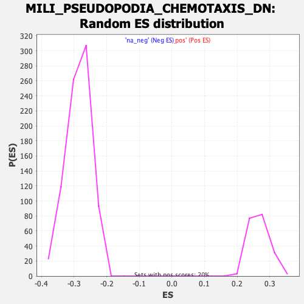

| | | Dataset | DE_genes |
| Phenotype | NoPhenotypeAvailable |
| Upregulated in class | na_neg |
| GeneSet | MILI_PSEUDOPODIA_CHEMOTAXIS_DN |
| Enrichment Score (ES) | -0.5026187 |
| Normalized Enrichment Score (NES) | -1.7561728 |
| Nominal p-value | 0.0 |
| FDR q-value | 0.024025425 |
| FWER p-Value | 0.205 |
Table: GSEA Results Summary
 Fig 1: Enrichment plot: MILI_PSEUDOPODIA_CHEMOTAXIS_DN
Fig 1: Enrichment plot: MILI_PSEUDOPODIA_CHEMOTAXIS_DN
Profile of the Running ES Score & Positions of GeneSet Members on the Rank Ordered List
| PROBE | GENE SYMBOL | GENE_TITLE | RANK IN GENE LIST | RANK METRIC SCORE | RUNNING ES | CORE ENRICHMENT | | 1 | LY6E | | | 391 | 2.250 | -0.0191 | No |
| 2 | TOR1B | | | 431 | 2.007 | -0.0156 | No |
| 3 | HLA-A | | | 440 | 1.978 | -0.0101 | No |
| 4 | PLA2G7 | | | 442 | 1.968 | -0.0042 | No |
| 5 | NEAT1 | | | 543 | 1.622 | -0.0060 | No |
| 6 | SOD3 | | | 613 | 1.440 | -0.0062 | No |
| 7 | C1S | | | 637 | 1.391 | -0.0035 | No |
| 8 | COL5A1 | | | 673 | 1.328 | -0.0018 | No |
| 9 | PDGFRA | | | 680 | 1.313 | 0.0018 | No |
| 10 | TLR2 | | | 698 | 1.278 | 0.0046 | No |
| 11 | NAGK | | | 706 | 1.269 | 0.0080 | No |
| 12 | COL4A1 | | | 749 | 1.195 | 0.0088 | No |
| 13 | APLP2 | | | 768 | 1.161 | 0.0111 | No |
| 14 | ERH | | | 951 | 0.923 | 0.0019 | No |
| 15 | KDM6B | | | 979 | 0.885 | 0.0028 | No |
| 16 | GMCL1 | | | 1131 | 0.735 | -0.0050 | No |
| 17 | GNS | | | 1222 | 0.662 | -0.0090 | No |
| 18 | RBX1 | | | 1382 | 0.571 | -0.0178 | No |
| 19 | EIF1 | | | 1410 | 0.563 | -0.0179 | No |
| 20 | SERPINF1 | | | 1443 | 0.546 | -0.0184 | No |
| 21 | IL6ST | | | 1449 | 0.543 | -0.0171 | No |
| 22 | GNB1 | | | 1523 | 0.509 | -0.0203 | No |
| 23 | NRP1 | | | 1536 | 0.501 | -0.0196 | No |
| 24 | GPR108 | | | 1570 | 0.485 | -0.0203 | No |
| 25 | GRN | | | 1573 | 0.481 | -0.0190 | No |
| 26 | PAN3 | | | 1574 | 0.481 | -0.0176 | No |
| 27 | F3 | | | 1587 | 0.477 | -0.0169 | No |
| 28 | EMILIN1 | | | 1600 | 0.472 | -0.0163 | No |
| 29 | COL4A6 | | | 1613 | 0.468 | -0.0156 | No |
| 30 | EIF2AK3 | | | 1621 | 0.464 | -0.0147 | No |
| 31 | RPS24 | | | 1652 | 0.452 | -0.0153 | No |
| 32 | CHUK | | | 1688 | 0.437 | -0.0163 | No |
| 33 | TLN1 | | | 1811 | 0.387 | -0.0232 | No |
| 34 | TPBG | | | 1830 | 0.380 | -0.0233 | No |
| 35 | ABCA7 | | | 1846 | 0.372 | -0.0231 | No |
| 36 | SCPEP1 | | | 1906 | 0.353 | -0.0260 | No |
| 37 | NFKBIZ | | | 1907 | 0.353 | -0.0249 | No |
| 38 | RPL12 | | | 2098 | 0.298 | -0.0366 | No |
| 39 | SLC6A6 | | | 2145 | 0.283 | -0.0388 | No |
| 40 | SBNO2 | | | 2167 | 0.276 | -0.0394 | No |
| 41 | CLCN4 | | | 2168 | 0.276 | -0.0385 | No |
| 42 | SEC61A2 | | | 2232 | 0.259 | -0.0419 | No |
| 43 | RPL30 | | | 2303 | 0.243 | -0.0458 | No |
| 44 | GAA | | | 2329 | 0.239 | -0.0468 | No |
| 45 | KATNBL1 | | | 2339 | 0.235 | -0.0467 | No |
| 46 | SLC35A2 | | | 2364 | 0.229 | -0.0476 | No |
| 47 | CKAP4 | | | 2412 | 0.224 | -0.0500 | No |
| 48 | WWP2 | | | 2435 | 0.219 | -0.0508 | No |
| 49 | PPT1 | | | 2477 | 0.213 | -0.0529 | No |
| 50 | RPS10 | | | 2535 | 0.203 | -0.0560 | No |
| 51 | ADRB2 | | | 2636 | 0.184 | -0.0621 | No |
| 52 | SCD | | | 2684 | 0.178 | -0.0647 | No |
| 53 | SGPL1 | | | 2744 | 0.168 | -0.0681 | No |
| 54 | FUS | | | 2778 | 0.165 | -0.0698 | No |
| 55 | SLC16A1 | | | 2779 | 0.165 | -0.0693 | No |
| 56 | SPPL2A | | | 2823 | 0.159 | -0.0716 | No |
| 57 | TAPBP | | | 2851 | 0.155 | -0.0730 | No |
| 58 | LRP12 | | | 2858 | 0.154 | -0.0729 | No |
| 59 | CLIC1 | | | 2933 | 0.146 | -0.0774 | No |
| 60 | TYW1 | | | 2936 | 0.146 | -0.0770 | No |
| 61 | TAP2 | | | 2957 | 0.144 | -0.0779 | No |
| 62 | SIGMAR1 | | | 3044 | 0.136 | -0.0832 | No |
| 63 | PLD3 | | | 3054 | 0.136 | -0.0834 | No |
| 64 | CTSB | | | 3066 | 0.134 | -0.0837 | No |
| 65 | SOCS3 | | | 3074 | 0.133 | -0.0838 | No |
| 66 | IGSF8 | | | 3115 | 0.130 | -0.0861 | No |
| 67 | NAGA | | | 3143 | 0.127 | -0.0875 | No |
| 68 | SLC12A9 | | | 3230 | 0.120 | -0.0928 | No |
| 69 | GSPT1 | | | 3246 | 0.118 | -0.0934 | No |
| 70 | GANAB | | | 3305 | 0.114 | -0.0969 | No |
| 71 | BCL9 | | | 3306 | 0.114 | -0.0966 | No |
| 72 | MATN4 | | | 3356 | 0.110 | -0.0995 | No |
| 73 | C1GALT1C1 | | | 3370 | 0.109 | -0.1000 | No |
| 74 | ACLY | | | 3386 | 0.108 | -0.1007 | No |
| 75 | ESD | | | 3418 | 0.106 | -0.1025 | No |
| 76 | GLA | | | 3429 | 0.105 | -0.1028 | No |
| 77 | RNF10 | | | 3446 | 0.103 | -0.1035 | No |
| 78 | RAB5B | | | 3466 | 0.101 | -0.1045 | No |
| 79 | PLAT | | | 3481 | 0.100 | -0.1051 | No |
| 80 | DDR1 | | | 3497 | 0.099 | -0.1058 | No |
| 81 | THBS1 | | | 3585 | 0.093 | -0.1113 | No |
| 82 | SF3B3 | | | 3586 | 0.093 | -0.1110 | No |
| 83 | CLDN9 | | | 3693 | 0.087 | -0.1178 | No |
| 84 | SNRNP48 | | | 3730 | 0.086 | -0.1199 | No |
| 85 | NHLRC3 | | | 3898 | 0.076 | -0.1308 | No |
| 86 | SERINC3 | | | 3959 | 0.073 | -0.1345 | No |
| 87 | SCAMP2 | | | 3995 | 0.070 | -0.1366 | No |
| 88 | MMP11 | | | 4485 | 0.043 | -0.1690 | No |
| 89 | GMPR2 | | | 4575 | 0.037 | -0.1748 | No |
| 90 | TMEM43 | | | 4591 | 0.037 | -0.1756 | No |
| 91 | PDE7A | | | 4970 | 0.018 | -0.2007 | No |
| 92 | SPTLC1 | | | 5008 | 0.015 | -0.2031 | No |
| 93 | TM9SF1 | | | 5011 | 0.015 | -0.2032 | No |
| 94 | USP14 | | | 5104 | 0.011 | -0.2092 | No |
| 95 | TRIM35 | | | 5168 | 0.008 | -0.2134 | No |
| 96 | TMPPE | | | 5171 | 0.008 | -0.2135 | No |
| 97 | HLA-DMB | | | 5259 | 0.003 | -0.2193 | No |
| 98 | BIRC2 | | | 5272 | 0.003 | -0.2200 | No |
| 99 | CDS2 | | | 5355 | -0.002 | -0.2255 | No |
| 100 | P4HA1 | | | 5381 | -0.003 | -0.2271 | No |
| 101 | ZDHHC5 | | | 5582 | -0.014 | -0.2404 | No |
| 102 | C1R | | | 5634 | -0.017 | -0.2437 | No |
| 103 | GGCX | | | 5641 | -0.017 | -0.2440 | No |
| 104 | KCNQ1OT1 | | | 5677 | -0.019 | -0.2463 | No |
| 105 | SLC30A6 | | | 5738 | -0.023 | -0.2502 | No |
| 106 | STEAP3 | | | 5848 | -0.029 | -0.2574 | No |
| 107 | HSD17B12 | | | 5869 | -0.030 | -0.2586 | No |
| 108 | ZFP36 | | | 5936 | -0.035 | -0.2629 | No |
| 109 | ABCA3 | | | 6035 | -0.042 | -0.2692 | No |
| 110 | TMEM33 | | | 6059 | -0.043 | -0.2706 | No |
| 111 | FN1 | | | 6107 | -0.047 | -0.2736 | No |
| 112 | VCL | | | 6120 | -0.048 | -0.2743 | No |
| 113 | ADAMTSL4 | | | 6127 | -0.048 | -0.2745 | No |
| 114 | ZNF562 | | | 6141 | -0.049 | -0.2752 | No |
| 115 | ALG1 | | | 6193 | -0.052 | -0.2785 | No |
| 116 | ATP13A1 | | | 6249 | -0.056 | -0.2819 | No |
| 117 | TENM4 | | | 6265 | -0.057 | -0.2828 | No |
| 118 | MALAT1 | | | 6331 | -0.061 | -0.2869 | No |
| 119 | CHST12 | | | 6363 | -0.063 | -0.2888 | No |
| 120 | CALD1 | | | 6398 | -0.065 | -0.2908 | No |
| 121 | SOD1 | | | 6447 | -0.069 | -0.2938 | No |
| 122 | TM2D3 | | | 6471 | -0.071 | -0.2951 | No |
| 123 | ABCC5 | | | 6477 | -0.071 | -0.2952 | No |
| 124 | RARA | | | 6548 | -0.075 | -0.2996 | No |
| 125 | LTBP4 | | | 6587 | -0.079 | -0.3019 | No |
| 126 | PRNP | | | 6712 | -0.089 | -0.3099 | No |
| 127 | SLC1A4 | | | 6740 | -0.090 | -0.3114 | No |
| 128 | TXNIP | | | 6761 | -0.092 | -0.3124 | No |
| 129 | SLC11A2 | | | 6767 | -0.093 | -0.3125 | No |
| 130 | GPI | | | 6770 | -0.093 | -0.3123 | No |
| 131 | SLC7A6 | | | 6844 | -0.098 | -0.3169 | No |
| 132 | LRRC8C | | | 6867 | -0.100 | -0.3180 | No |
| 133 | CUX1 | | | 6910 | -0.103 | -0.3205 | No |
| 134 | TGIF1 | | | 6918 | -0.104 | -0.3207 | No |
| 135 | MAPK8IP3 | | | 6923 | -0.105 | -0.3206 | No |
| 136 | RCN3 | | | 6932 | -0.106 | -0.3208 | No |
| 137 | RPN2 | | | 6980 | -0.109 | -0.3236 | No |
| 138 | GSK3B | | | 6993 | -0.110 | -0.3241 | No |
| 139 | PTPRA | | | 7028 | -0.113 | -0.3260 | No |
| 140 | ALKBH1 | | | 7062 | -0.115 | -0.3278 | No |
| 141 | CNNM2 | | | 7082 | -0.117 | -0.3287 | No |
| 142 | TRA2A | | | 7142 | -0.122 | -0.3323 | No |
| 143 | SLC35F6 | | | 7196 | -0.127 | -0.3354 | No |
| 144 | NAA40 | | | 7223 | -0.129 | -0.3367 | No |
| 145 | SERPINE1 | | | 7331 | -0.139 | -0.3434 | No |
| 146 | TM9SF2 | | | 7398 | -0.144 | -0.3474 | No |
| 147 | MAN2B1 | | | 7410 | -0.145 | -0.3477 | No |
| 148 | WLS | | | 7415 | -0.146 | -0.3475 | No |
| 149 | SFPQ | | | 7614 | -0.163 | -0.3601 | No |
| 150 | SIRT3 | | | 7676 | -0.168 | -0.3637 | No |
| 151 | FGF7 | | | 7714 | -0.172 | -0.3656 | No |
| 152 | LRP1 | | | 7763 | -0.176 | -0.3682 | No |
| 153 | MFSD9 | | | 7817 | -0.181 | -0.3712 | No |
| 154 | UBE2I | | | 7833 | -0.182 | -0.3717 | No |
| 155 | C6orf89 | | | 7848 | -0.184 | -0.3720 | No |
| 156 | RIOK1 | | | 7867 | -0.186 | -0.3727 | No |
| 157 | CTNNB1 | | | 7899 | -0.189 | -0.3741 | No |
| 158 | THRAP3 | | | 7936 | -0.192 | -0.3759 | No |
| 159 | ADAMTS5 | | | 7939 | -0.193 | -0.3755 | No |
| 160 | TIMP2 | | | 7990 | -0.197 | -0.3782 | No |
| 161 | TWSG1 | | | 8029 | -0.202 | -0.3801 | No |
| 162 | EMC1 | | | 8038 | -0.203 | -0.3800 | No |
| 163 | NRP2 | | | 8090 | -0.208 | -0.3828 | No |
| 164 | KCNN4 | | | 8096 | -0.208 | -0.3825 | No |
| 165 | LAMC1 | | | 8278 | -0.227 | -0.3938 | No |
| 166 | FZD2 | | | 8286 | -0.228 | -0.3936 | No |
| 167 | PHB2 | | | 8316 | -0.231 | -0.3948 | No |
| 168 | NONO | | | 8339 | -0.234 | -0.3956 | No |
| 169 | CCNY | | | 8360 | -0.235 | -0.3962 | No |
| 170 | PIM3 | | | 8418 | -0.242 | -0.3992 | No |
| 171 | ANXA7 | | | 8455 | -0.246 | -0.4009 | No |
| 172 | KHK | | | 8466 | -0.248 | -0.4008 | No |
| 173 | SLC38A10 | | | 8538 | -0.255 | -0.4047 | No |
| 174 | CNOT3 | | | 8613 | -0.263 | -0.4088 | No |
| 175 | MAST4 | | | 8617 | -0.264 | -0.4082 | No |
| 176 | BCLAF1 | | | 8639 | -0.267 | -0.4088 | No |
| 177 | SLC39A14 | | | 8685 | -0.272 | -0.4110 | No |
| 178 | SRI | | | 8702 | -0.274 | -0.4112 | No |
| 179 | ABCC1 | | | 8735 | -0.278 | -0.4125 | No |
| 180 | DEGS1 | | | 8737 | -0.278 | -0.4117 | No |
| 181 | SEL1L | | | 8747 | -0.280 | -0.4114 | No |
| 182 | PDIA3 | | | 8802 | -0.286 | -0.4142 | No |
| 183 | TXNDC5 | | | 8804 | -0.287 | -0.4134 | No |
| 184 | ASAP1 | | | 8809 | -0.287 | -0.4128 | No |
| 185 | RPAP1 | | | 8817 | -0.288 | -0.4123 | No |
| 186 | SLC20A2 | | | 8842 | -0.291 | -0.4131 | No |
| 187 | POFUT1 | | | 8888 | -0.296 | -0.4151 | No |
| 188 | MOGS | | | 9018 | -0.312 | -0.4228 | No |
| 189 | SPNS1 | | | 9090 | -0.321 | -0.4265 | No |
| 190 | HMGCR | | | 9266 | -0.343 | -0.4371 | No |
| 191 | DCBLD1 | | | 9364 | -0.354 | -0.4424 | No |
| 192 | PNPLA7 | | | 9385 | -0.356 | -0.4427 | No |
| 193 | ATAT1 | | | 9396 | -0.358 | -0.4422 | No |
| 194 | BTG1 | | | 9479 | -0.370 | -0.4466 | No |
| 195 | ABCA2 | | | 9491 | -0.372 | -0.4462 | No |
| 196 | LDLR | | | 9519 | -0.375 | -0.4468 | No |
| 197 | SLC20A1 | | | 9579 | -0.385 | -0.4496 | No |
| 198 | MFSD10 | | | 9681 | -0.401 | -0.4550 | No |
| 199 | PTPRF | | | 9717 | -0.407 | -0.4561 | No |
| 200 | TUBGCP4 | | | 9725 | -0.408 | -0.4554 | No |
| 201 | SLC2A10 | | | 9766 | -0.412 | -0.4568 | No |
| 202 | FLNB | | | 9774 | -0.413 | -0.4560 | No |
| 203 | POR | | | 9795 | -0.417 | -0.4560 | No |
| 204 | STT3A | | | 9832 | -0.422 | -0.4571 | No |
| 205 | FADS3 | | | 9889 | -0.431 | -0.4596 | No |
| 206 | LHFPL2 | | | 9890 | -0.431 | -0.4582 | No |
| 207 | CD109 | | | 9974 | -0.443 | -0.4624 | No |
| 208 | FBLN2 | | | 9994 | -0.445 | -0.4623 | No |
| 209 | MST1 | | | 10031 | -0.450 | -0.4633 | No |
| 210 | ABHD12 | | | 10046 | -0.454 | -0.4629 | No |
| 211 | FZD7 | | | 10084 | -0.459 | -0.4640 | No |
| 212 | TNFSF9 | | | 10091 | -0.460 | -0.4630 | No |
| 213 | PTGS1 | | | 10110 | -0.463 | -0.4627 | No |
| 214 | MSLN | | | 10307 | -0.492 | -0.4743 | No |
| 215 | ADORA2B | | | 10343 | -0.498 | -0.4751 | No |
| 216 | OGT | | | 10363 | -0.499 | -0.4748 | No |
| 217 | ITGA3 | | | 10375 | -0.501 | -0.4740 | No |
| 218 | SLC19A1 | | | 10378 | -0.502 | -0.4726 | No |
| 219 | RRBP1 | | | 10388 | -0.503 | -0.4717 | No |
| 220 | PCDH19 | | | 10442 | -0.511 | -0.4737 | No |
| 221 | KLF3 | | | 10518 | -0.523 | -0.4771 | No |
| 222 | PPIL2 | | | 10528 | -0.525 | -0.4761 | No |
| 223 | RPN1 | | | 10532 | -0.525 | -0.4747 | No |
| 224 | NEU1 | | | 10578 | -0.534 | -0.4760 | No |
| 225 | DDOST | | | 10650 | -0.546 | -0.4791 | No |
| 226 | SLCO2A1 | | | 10659 | -0.547 | -0.4780 | No |
| 227 | SLC23A2 | | | 10667 | -0.548 | -0.4768 | No |
| 228 | CTNNA1 | | | 10720 | -0.556 | -0.4785 | No |
| 229 | ELOVL1 | | | 10735 | -0.558 | -0.4778 | No |
| 230 | SLC29A1 | | | 10834 | -0.572 | -0.4825 | No |
| 231 | SFSWAP | | | 10893 | -0.580 | -0.4846 | No |
| 232 | FAM171A1 | | | 10898 | -0.581 | -0.4831 | No |
| 233 | SCFD1 | | | 10965 | -0.592 | -0.4857 | No |
| 234 | AXL | | | 11136 | -0.623 | -0.4951 | No |
| 235 | PKD1 | | | 11175 | -0.631 | -0.4957 | No |
| 236 | DHRS7 | | | 11204 | -0.636 | -0.4956 | No |
| 237 | MATN2 | | | 11243 | -0.645 | -0.4962 | No |
| 238 | PIGM | | | 11257 | -0.648 | -0.4951 | No |
| 239 | APP | | | 11258 | -0.648 | -0.4931 | No |
| 240 | LIME1 | | | 11291 | -0.655 | -0.4933 | No |
| 241 | PI16 | | | 11350 | -0.667 | -0.4951 | No |
| 242 | HMGCS1 | | | 11408 | -0.680 | -0.4968 | No |
| 243 | NAGLU | | | 11436 | -0.685 | -0.4965 | No |
| 244 | CHPF | | | 11529 | -0.705 | -0.5005 | Yes |
| 245 | SERINC1 | | | 11542 | -0.707 | -0.4991 | Yes |
| 246 | COL4A5 | | | 11568 | -0.713 | -0.4986 | Yes |
| 247 | DGAT1 | | | 11575 | -0.715 | -0.4969 | Yes |
| 248 | CLSTN1 | | | 11587 | -0.717 | -0.4954 | Yes |
| 249 | SNX29 | | | 11627 | -0.726 | -0.4958 | Yes |
| 250 | ZMIZ1 | | | 11658 | -0.734 | -0.4956 | Yes |
| 251 | SYVN1 | | | 11713 | -0.744 | -0.4969 | Yes |
| 252 | ATRN | | | 11723 | -0.745 | -0.4952 | Yes |
| 253 | P2RX4 | | | 11747 | -0.750 | -0.4945 | Yes |
| 254 | CDIP1 | | | 11756 | -0.752 | -0.4927 | Yes |
| 255 | DGCR2 | | | 11767 | -0.755 | -0.4911 | Yes |
| 256 | MTCH2 | | | 11782 | -0.757 | -0.4897 | Yes |
| 257 | ARMC9 | | | 11830 | -0.768 | -0.4905 | Yes |
| 258 | SLC12A4 | | | 11878 | -0.779 | -0.4913 | Yes |
| 259 | NFIB | | | 12017 | -0.808 | -0.4980 | Yes |
| 260 | CCNT2 | | | 12067 | -0.817 | -0.4987 | Yes |
| 261 | B3GNT2 | | | 12086 | -0.825 | -0.4974 | Yes |
| 262 | KLF6 | | | 12090 | -0.825 | -0.4951 | Yes |
| 263 | IGF1R | | | 12139 | -0.839 | -0.4958 | Yes |
| 264 | BCAP31 | | | 12165 | -0.845 | -0.4949 | Yes |
| 265 | NDEL1 | | | 12203 | -0.855 | -0.4947 | Yes |
| 266 | EDEM2 | | | 12263 | -0.868 | -0.4960 | Yes |
| 267 | PLXNB2 | | | 12290 | -0.875 | -0.4951 | Yes |
| 268 | TCTN1 | | | 12315 | -0.881 | -0.4940 | Yes |
| 269 | LMBRD1 | | | 12344 | -0.889 | -0.4932 | Yes |
| 270 | ABCC10 | | | 12386 | -0.899 | -0.4931 | Yes |
| 271 | P4HA2 | | | 12441 | -0.914 | -0.4940 | Yes |
| 272 | SLC2A1 | | | 12463 | -0.919 | -0.4926 | Yes |
| 273 | DPF2 | | | 12466 | -0.919 | -0.4899 | Yes |
| 274 | TTC19 | | | 12475 | -0.921 | -0.4876 | Yes |
| 275 | RUSC2 | | | 12504 | -0.930 | -0.4867 | Yes |
| 276 | GGNBP2 | | | 12521 | -0.933 | -0.4849 | Yes |
| 277 | CHPF2 | | | 12522 | -0.933 | -0.4821 | Yes |
| 278 | PABPN1 | | | 12561 | -0.944 | -0.4817 | Yes |
| 279 | PDIA5 | | | 12569 | -0.945 | -0.4793 | Yes |
| 280 | SREBF2 | | | 12618 | -0.959 | -0.4796 | Yes |
| 281 | ARHGAP17 | | | 12636 | -0.964 | -0.4778 | Yes |
| 282 | NEDD4L | | | 12661 | -0.970 | -0.4765 | Yes |
| 283 | VASN | | | 12667 | -0.972 | -0.4738 | Yes |
| 284 | SLC38A2 | | | 12707 | -0.983 | -0.4734 | Yes |
| 285 | HSPA5 | | | 12732 | -0.991 | -0.4720 | Yes |
| 286 | SLC10A3 | | | 12766 | -1.001 | -0.4712 | Yes |
| 287 | TRPS1 | | | 12817 | -1.016 | -0.4714 | Yes |
| 288 | BRMS1 | | | 12839 | -1.025 | -0.4697 | Yes |
| 289 | EPB41L2 | | | 12855 | -1.029 | -0.4676 | Yes |
| 290 | PSAP | | | 12873 | -1.037 | -0.4656 | Yes |
| 291 | SEC61A1 | | | 12878 | -1.038 | -0.4627 | Yes |
| 292 | LGMN | | | 12897 | -1.045 | -0.4607 | Yes |
| 293 | NISCH | | | 12909 | -1.048 | -0.4582 | Yes |
| 294 | MED15 | | | 12975 | -1.068 | -0.4593 | Yes |
| 295 | PLOD1 | | | 13001 | -1.076 | -0.4577 | Yes |
| 296 | SNX14 | | | 13021 | -1.083 | -0.4557 | Yes |
| 297 | PPP6R3 | | | 13040 | -1.088 | -0.4536 | Yes |
| 298 | DOLK | | | 13068 | -1.096 | -0.4520 | Yes |
| 299 | ESYT1 | | | 13097 | -1.105 | -0.4506 | Yes |
| 300 | ECM1 | | | 13101 | -1.107 | -0.4474 | Yes |
| 301 | NCEH1 | | | 13144 | -1.118 | -0.4468 | Yes |
| 302 | PPP1R10 | | | 13164 | -1.124 | -0.4446 | Yes |
| 303 | LOX | | | 13167 | -1.125 | -0.4414 | Yes |
| 304 | HSF1 | | | 13174 | -1.127 | -0.4383 | Yes |
| 305 | PLXNA3 | | | 13192 | -1.133 | -0.4360 | Yes |
| 306 | SLC19A2 | | | 13193 | -1.135 | -0.4326 | Yes |
| 307 | GPAA1 | | | 13229 | -1.149 | -0.4314 | Yes |
| 308 | SS18L1 | | | 13258 | -1.157 | -0.4298 | Yes |
| 309 | VCP | | | 13263 | -1.160 | -0.4265 | Yes |
| 310 | BMP1 | | | 13279 | -1.167 | -0.4240 | Yes |
| 311 | UBTF | | | 13322 | -1.181 | -0.4232 | Yes |
| 312 | SFI1 | | | 13326 | -1.182 | -0.4198 | Yes |
| 313 | AP2A2 | | | 13339 | -1.187 | -0.4170 | Yes |
| 314 | KRIT1 | | | 13353 | -1.195 | -0.4142 | Yes |
| 315 | ITGA5 | | | 13366 | -1.201 | -0.4114 | Yes |
| 316 | LAMB2 | | | 13392 | -1.211 | -0.4093 | Yes |
| 317 | CHKA | | | 13421 | -1.220 | -0.4075 | Yes |
| 318 | IGSF3 | | | 13426 | -1.222 | -0.4041 | Yes |
| 319 | DHX30 | | | 13448 | -1.231 | -0.4017 | Yes |
| 320 | RBM39 | | | 13462 | -1.238 | -0.3988 | Yes |
| 321 | DIAPH1 | | | 13500 | -1.253 | -0.3975 | Yes |
| 322 | PDIA6 | | | 13545 | -1.271 | -0.3965 | Yes |
| 323 | ITGB1 | | | 13563 | -1.279 | -0.3938 | Yes |
| 324 | ITPRIP | | | 13657 | -1.314 | -0.3960 | Yes |
| 325 | NPC1 | | | 13659 | -1.315 | -0.3920 | Yes |
| 326 | MPG | | | 13771 | -1.368 | -0.3953 | Yes |
| 327 | SGMS1 | | | 13773 | -1.369 | -0.3912 | Yes |
| 328 | NPR2 | | | 13805 | -1.383 | -0.3890 | Yes |
| 329 | GLG1 | | | 13877 | -1.415 | -0.3894 | Yes |
| 330 | ZFYVE27 | | | 13886 | -1.418 | -0.3857 | Yes |
| 331 | CLCF1 | | | 13913 | -1.431 | -0.3831 | Yes |
| 332 | AGFG2 | | | 13916 | -1.432 | -0.3788 | Yes |
| 333 | C20orf194 | | | 13965 | -1.453 | -0.3776 | Yes |
| 334 | SMG5 | | | 13975 | -1.458 | -0.3738 | Yes |
| 335 | POFUT2 | | | 14007 | -1.474 | -0.3714 | Yes |
| 336 | ZZEF1 | | | 14053 | -1.503 | -0.3698 | Yes |
| 337 | GAS5 | | | 14057 | -1.507 | -0.3654 | Yes |
| 338 | CD9 | | | 14063 | -1.510 | -0.3612 | Yes |
| 339 | MFSD11 | | | 14088 | -1.528 | -0.3581 | Yes |
| 340 | SON | | | 14094 | -1.531 | -0.3538 | Yes |
| 341 | PUF60 | | | 14106 | -1.540 | -0.3499 | Yes |
| 342 | CPSF7 | | | 14113 | -1.542 | -0.3456 | Yes |
| 343 | POLG | | | 14114 | -1.542 | -0.3409 | Yes |
| 344 | SLC4A7 | | | 14125 | -1.550 | -0.3369 | Yes |
| 345 | RGMB | | | 14128 | -1.553 | -0.3323 | Yes |
| 346 | PFKL | | | 14165 | -1.581 | -0.3299 | Yes |
| 347 | RANBP3 | | | 14200 | -1.602 | -0.3273 | Yes |
| 348 | RNPS1 | | | 14238 | -1.622 | -0.3248 | Yes |
| 349 | MPZL1 | | | 14275 | -1.648 | -0.3222 | Yes |
| 350 | DAG1 | | | 14290 | -1.654 | -0.3181 | Yes |
| 351 | E4F1 | | | 14318 | -1.671 | -0.3148 | Yes |
| 352 | ATP10A | | | 14449 | -1.752 | -0.3182 | Yes |
| 353 | GPRC5B | | | 14504 | -1.791 | -0.3163 | Yes |
| 354 | SEMA3B | | | 14527 | -1.808 | -0.3123 | Yes |
| 355 | SUN1 | | | 14535 | -1.816 | -0.3072 | Yes |
| 356 | SLC44A2 | | | 14567 | -1.844 | -0.3037 | Yes |
| 357 | PVR | | | 14568 | -1.844 | -0.2981 | Yes |
| 358 | FAM53B | | | 14577 | -1.851 | -0.2930 | Yes |
| 359 | THBS3 | | | 14594 | -1.867 | -0.2884 | Yes |
| 360 | ATP1A1 | | | 14599 | -1.871 | -0.2830 | Yes |
| 361 | ANKRD11 | | | 14646 | -1.915 | -0.2802 | Yes |
| 362 | DIDO1 | | | 14694 | -1.965 | -0.2774 | Yes |
| 363 | PCDH1 | | | 14712 | -1.986 | -0.2725 | Yes |
| 364 | SNED1 | | | 14727 | -1.995 | -0.2674 | Yes |
| 365 | ACVR1 | | | 14743 | -2.010 | -0.2623 | Yes |
| 366 | POLDIP3 | | | 14759 | -2.026 | -0.2571 | Yes |
| 367 | CLCN6 | | | 14770 | -2.036 | -0.2516 | Yes |
| 368 | SUN2 | | | 14772 | -2.039 | -0.2455 | Yes |
| 369 | HSPA8 | | | 14798 | -2.061 | -0.2409 | Yes |
| 370 | COL16A1 | | | 14812 | -2.073 | -0.2355 | Yes |
| 371 | USP53 | | | 14863 | -2.124 | -0.2323 | Yes |
| 372 | USP7 | | | 14867 | -2.127 | -0.2261 | Yes |
| 373 | ACTL6A | | | 14889 | -2.145 | -0.2210 | Yes |
| 374 | TIMP3 | | | 14893 | -2.151 | -0.2146 | Yes |
| 375 | RPL41 | | | 14917 | -2.186 | -0.2095 | Yes |
| 376 | HTT | | | 14942 | -2.220 | -0.2044 | Yes |
| 377 | DUSP1 | | | 14967 | -2.266 | -0.1991 | Yes |
| 378 | SEMA4C | | | 14993 | -2.291 | -0.1938 | Yes |
| 379 | BAIAP2 | | | 14999 | -2.299 | -0.1872 | Yes |
| 380 | QSOX1 | | | 15001 | -2.303 | -0.1802 | Yes |
| 381 | ANGPTL2 | | | 15003 | -2.304 | -0.1733 | Yes |
| 382 | FGFR1 | | | 15011 | -2.322 | -0.1667 | Yes |
| 383 | AKAP1 | | | 15020 | -2.334 | -0.1602 | Yes |
| 384 | RGS3 | | | 15041 | -2.368 | -0.1543 | Yes |
| 385 | ADNP2 | | | 15093 | -2.461 | -0.1502 | Yes |
| 386 | TMEM109 | | | 15144 | -2.536 | -0.1459 | Yes |
| 387 | NOC2L | | | 15149 | -2.543 | -0.1384 | Yes |
| 388 | TTC7A | | | 15162 | -2.564 | -0.1314 | Yes |
| 389 | CSPG4 | | | 15181 | -2.604 | -0.1247 | Yes |
| 390 | MMP14 | | | 15187 | -2.621 | -0.1171 | Yes |
| 391 | FIBP | | | 15242 | -2.754 | -0.1123 | Yes |
| 392 | GALNT18 | | | 15246 | -2.787 | -0.1041 | Yes |
| 393 | EPHB4 | | | 15263 | -2.824 | -0.0966 | Yes |
| 394 | ZSWIM8 | | | 15308 | -2.961 | -0.0905 | Yes |
| 395 | AQP1 | | | 15320 | -3.041 | -0.0820 | Yes |
| 396 | PIK3IP1 | | | 15398 | -3.562 | -0.0763 | Yes |
| 397 | SLC39A7 | | | 15400 | -3.576 | -0.0655 | Yes |
| 398 | SEMA3F | | | 15424 | -3.894 | -0.0552 | Yes |
| 399 | PDGFRB | | | 15447 | -4.465 | -0.0431 | Yes |
| 400 | FOSB | | | 15469 | -5.930 | -0.0265 | Yes |
| 401 | FOS | | | 15471 | -8.771 | -0.0000 | Yes |
Table: GSEA details [plain text format]

Fig 2: MILI_PSEUDOPODIA_CHEMOTAXIS_DN: Random ES distribution
Gene set null distribution of ES for MILI_PSEUDOPODIA_CHEMOTAXIS_DN